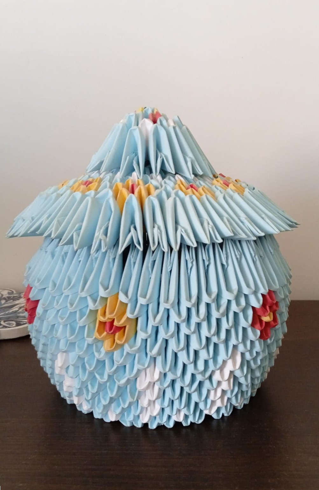
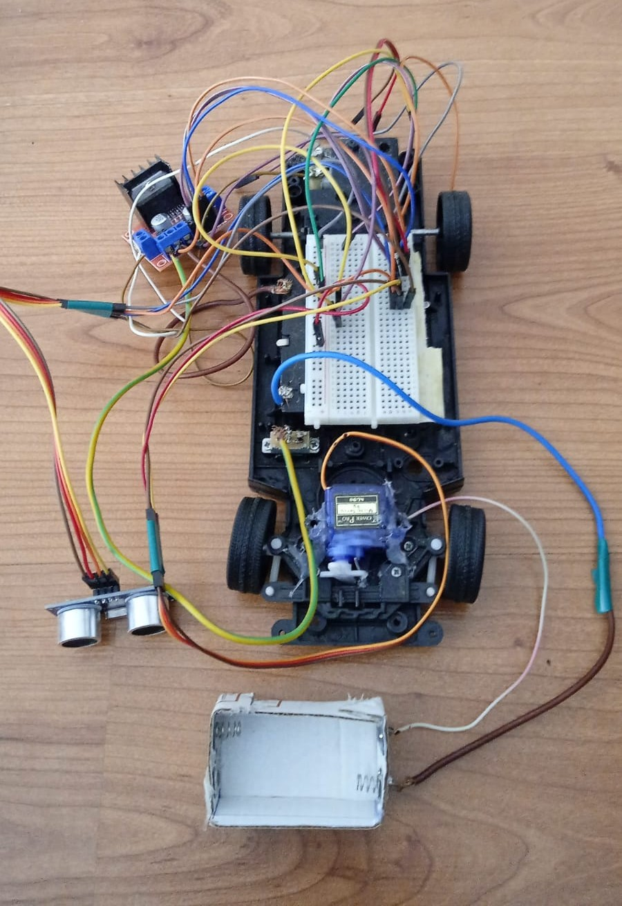
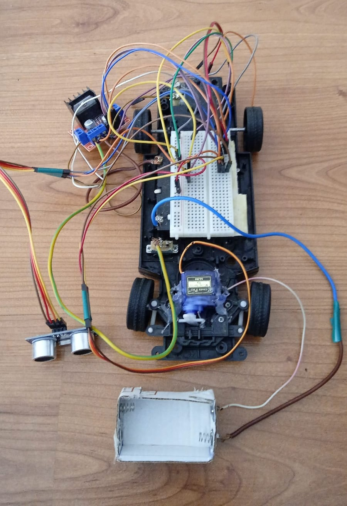

Hakkımda
Merhaba, ben Elif Gül Uyar. 26 Mart 2005'te Antalya'da doğdum, aslen Bursalıyım. Lise öğrenimimi bir anadolu lisesinde tamamladım. Şu anda Süleyman Demirel Üniversitesi, bilgisayar mühendisliği 3.sınıf öğrencisiyim.
Şu sıralar kendimi yabancı dil ve microsoft office programlarında geliştirmeye çalışıyorum. Gelecekte önümü açacak yeni yetkinlikler arayışındayım. Hedefimi daha çok siber güvenlik ve yazılım hakkında ilerletmeyi düşünüyorum.
Hobilerim
Lise ve ortaokul zamanlarımda taekwondo ve oryantringle uğraşmıştım şu an aktif yaptığım bir spor bulunmuyor. Resim yapmayı bir şeyler tasarlamayı severim bu özelliğim iş hayatında da yönümü belirleyeceğini düşünüyorum. Lise zamanlarımda abimle birlikte biraz robotik öğrenip basit bir sensörlü araba yapmıştık.
Origami, resim çalışmalarımdan birer tanesini ve arabanın fotoğrafını aşağıya ekledim.
 

Bunlar dışında da çoğu şeyle ilgilenmeyi severim; video oyunları oynarım, kitap okurum, tarih araştırırım, evdeki bir şeyleri tamir ederim, kendin yap projeleri yapmaya çalışırım, pasta süslemeye tatlı yapmaya bayılırım. Özetle yeni şeyler öğrenmeyi, okumayı, araştırmayı, sanat ve bilimle iç içe olmayı seviyorum diyebilirim.
İletişim
Bana ulaşmak için: uyarelif2005@gmail.com